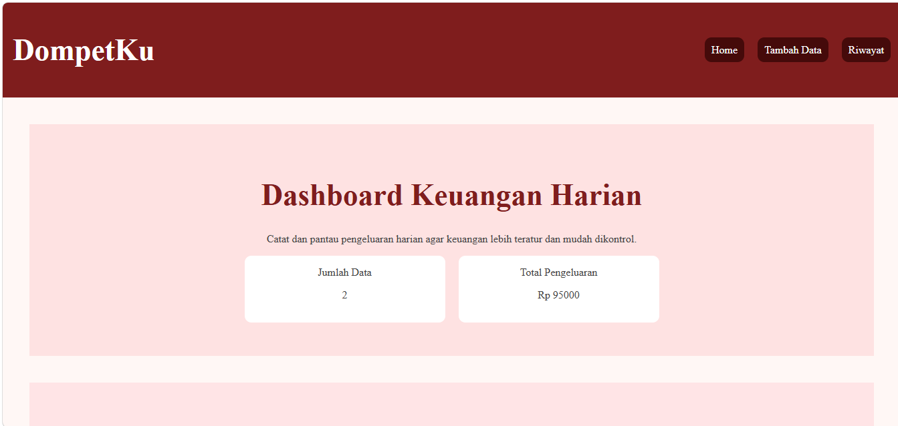

Website DompetKu dibuat sebagai latihan dalam memahami dasar pengembangan website interaktif menggunakan JavaScript. Project ini berfokus pada pengelolaan data pengeluaran harian dengan tampilan dashboard sederhana dan modern. Pengguna dapat menambahkan data pengeluaran, melihat total pengeluaran, mengedit data, menghapus data, serta mencari data pengeluaran berdasarkan nama.
Dalam proses pembuatan website ini, saya melakukan beberapa tahap sederhana untuk menentukan fitur dan tampilan website yang sesuai.
Dalam proses pengembangan website, saya mencoba membuat tampilan dashboard yang sederhana, modern, dan mudah digunakan.
Melalui project ini, saya mendapatkan pengalaman dan pemahaman dasar dalam membuat website interaktif menggunakan JavaScript.